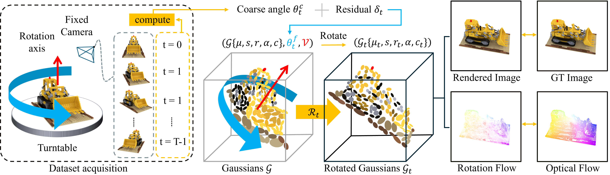
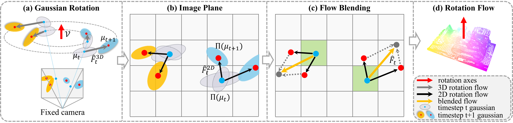

RotGS: Rotation-Guided 3D Gaussian Splatting for Turntable Sequences without Structure-from-Motion
Abstract
The field of 3D reconstruction from multi-view images has advanced rapidly thanks to 3D Gaussian Splatting (3DGS), which enables efficient and photorealistic scene representation. However, optimizing 3DGS requires high-quality images from various viewpoints with accurate camera poses. The repeated collection of such data demands significant human effort, which poses a major constraint in practical applications. To address this issue, automated capturing systems that use a turntable and fixed camera are widely employed. In a turntable setup, the background remains stationary while the object rotates. Therefore, preprocessing to remove the background is essential, but this reduces the number of reliable feature matches and destabilizes Structure-from-Motion (SfM). This results in inaccurate camera poses and degrades the quality of 3DGS reconstruction. We propose a novel method to optimize 3DGS in a turntable setup without SfM by leveraging the prior knowledge that objects rotate around a central axis. Unlike previous SfM-free methods that estimate camera poses for each frame, our approach reduces the complexity of optimization by representing rotations with a single global rotation axis. The estimated rotation is directly applied to the 3D Gaussians, producing motion defined as rotation flow. This rotation flow is aligned with optical flow to provide strong geometric supervision. Through uncertainty-to-detail flow scheduling, our approach remains stable during the initial training stage when the geometry of the Gaussian set is still inaccurate. On the NeRF-Synthetic dataset and real-world datasets captured with a turntable, our method outperforms existing SfM-free approaches in both reconstruction quality and training speed, while demonstrating performance comparable to 3DGS optimized with precise camera poses.
Method Overview

Rotation Flow

Results

Supplementary Video
BibTeX
@article{10.1111:cgf.70317,
journal = {Computer Graphics Forum},
title = {{RotGS: Rotation-Guided 3D Gaussian Splatting for Turntable Sequences without Structure-from-Motion}},
author = {Kim, Kyumin and Lee, Dohae and Baek, Hanul and Lee, In-Kwon},
year = {2026},
publisher = {The Eurographics Association and John Wiley & Sons Ltd.},
ISSN = {1467-8659},
DOI = {10.1111/cgf.70317}
}